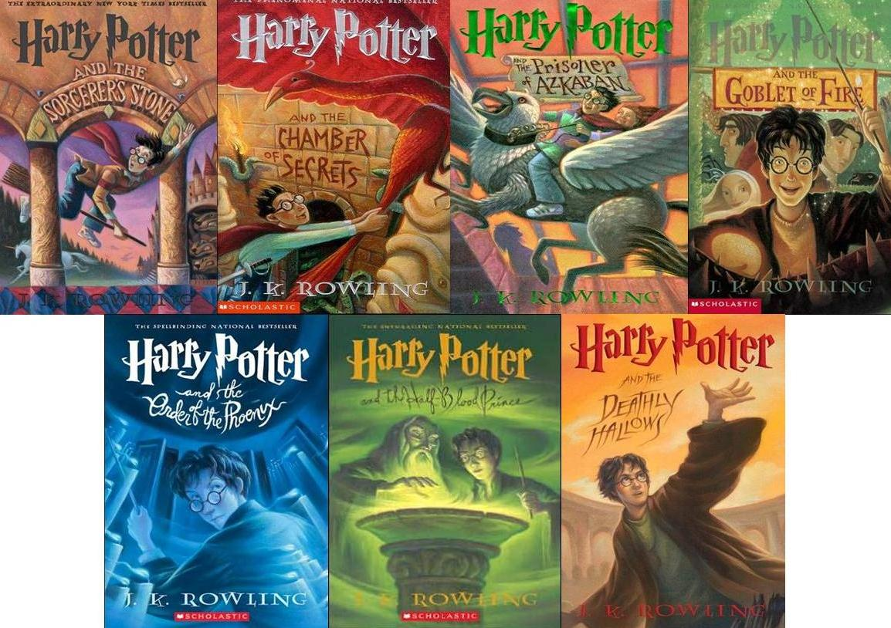
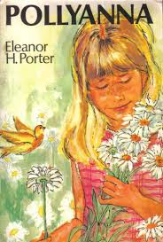
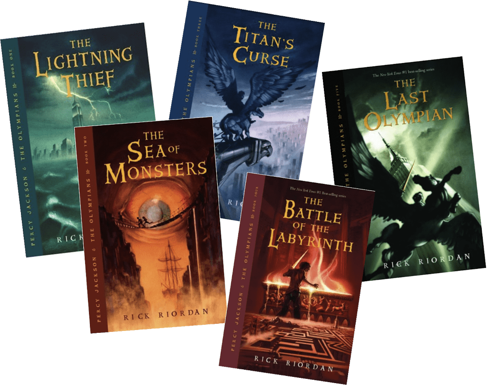
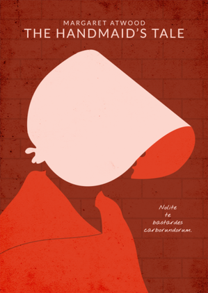
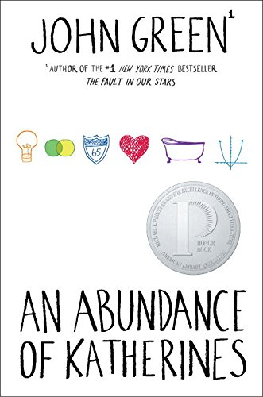
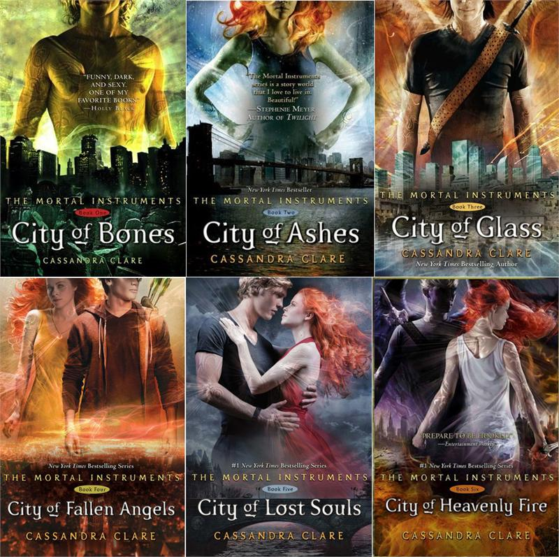
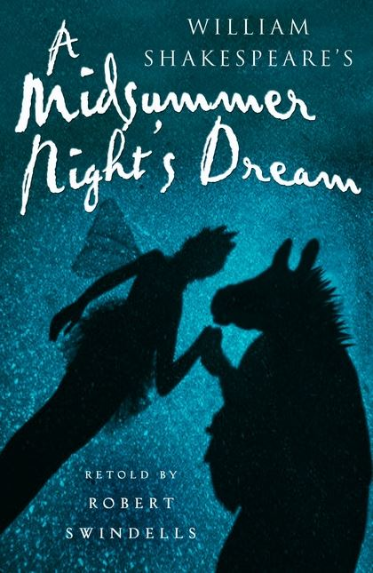

The saga chronicles the adventures of a young man named Harry James Potter, who discovers at the age of 11 that he is a wizard when invited to study at Hogwarts School of Witchcraft and Wizardry. The main story arc concerns Harry's friendships with other wizards of his age, Ronald Weasley and Hermione Granger, as well as Hogwarts director Albus Dumbledore, considered the greatest of wizards, and his conflicts with the dark wizard. Lord Voldemort, who aims to become immortal, conquer the wizarding world, subdue non-magical people and destroy all those in his path, especially Harry Potter, whom he considers his greatest rival.
Pollyanna is an orphan girl who will live with her aunt Polly a sad and spiteful woman but becomes an example to be followed in the small town. Despite all the challenges of life, Pollyanna teaches us that happiness, love and goodness must be maintained.
The gods of Olympus are still alive in the 21st century! They still fall in love with mortals and have children who can become great heroes, but most of the time find terrible fates in the clutches of heartless monsters. Only a few discover their identity and make it to Camp Half-Blood, a Long Island summer camp dedicated to training young demigods. This is the revelation that drives Percy Jackson on an incredible quest to help his true father - Poseidon the god of the seas - avert a war on Olympus. With the help of satyr Grover and Annabeth, a daughter of Athena, Percy is charged with crossing the United States to capture the thief who stole the most powerful weapon of destruction ever conceived: Zeus' lightning master.
Sofia lives in a metropolis and is accustomed to the modernity and facilities it brings. She is independent and is terrified at the mere mention of the word marriage. The only novels in your life are those that books provide. After buying a new cell phone, something mysterious happens and Sofia finds out she's lost in the nineteenth century, having no idea how to get back home or if it's even possible. While desperately trying to find a way to return to the present tense, she is welcomed by the Clarke family. With the help of the handsome and helpful Ian Clarke, Sofia embarks on a frantic search and finds clues that might help her solve this mystery and return to her beloved modern life. What she didn't know was that her heart had other plans.
In the world of the near future, who will control women's bodies? Offred is a Handmaid in the Republic of Gilead. She may leave the home of the Commander and his wife once a day to walk to food markets whose signs are now pictures instead of words because women are no longer allowed to read. She must lie on her back once a month and pray that the Commander makes her pregnant, because in an age of declining births, Offred and the other Handmaids are only valued if their ovaries are viable. Offred can remember the days before, when she lived and made love with her husband Luke; when she played with and protected her daughter; when she had a job, money of her own, and access to knowledge. But all of that is gone now.... Funny, unexpected, horrifying, and altogether convincing, The Handmaid's Tale is at once scathing satire, dire warning, and tour de force.
When Thomas wakes up in the lift, the only thing he can remember is his first name. His memory is blank. But he's not alone. When the lift's doors open, Thomas finds himself surrounded by kids who welcome him to the Glade-a large, open expanse surrounded by stone walls. Just like Thomas, the Gladers don't know why or how they got to the Glade. All they know is that every morning the stone doors to the maze that surrounds them have opened. Every night they've closed tight. And every 30 days a new boy has been delivered in the lift. Thomas was expected. But the next day, a girl is sent up-the first girl to ever arrive in the Glade. And more surprising yet is the message she delivers. Thomas might be more important than he could ever guess. If only he could unlock the dark secrets buried within his mind.

When it comes to relationships, Colin Singleton's type is girls named Katherine. And when it comes to girls named Katherine, Colin is always getting dumped. On road trip miles from home, this anagram-happy, washed-up child prodigy has ten thousand dollars in his pocket, a bloodthirsty feral hog on his trail, and an overweight Judge Judy.
When fifteen-year-old Clary Fray heads out to the Pandemonium Club in New York City, she hardly expects to witness a murder - much less a murder committed by three teenagers covered with strange tattoos and brandishing bizarre weapons. And shes more than a little startled when the body disappears into thin air. Soon Clary is introduced to the world of the Shadowhunters, a secret cadre of warriors dedicated to driving demons out of our world and back to their own. And Clary is introduced with a vengeance, when her mother disappears and Clary herself is almost killed by a grotesque monster. How could a mere human survive such an attack and kill a demon? The Shadowhunters would like to know. It follows Clary Fray while also discovering her own heritage. The Shadowhunters protect the world of mundane people, who are also called mundanes or "mundies", from dark forces beyond their world.
In '' O Cortiço '' we follow the story of João Romão, Portuguese obsessed with social ascension. To do so, it measures no limits or obstacles. She works compulsively, saves every penny, takes advantage of her mistress, exploits employees. It starts with a sale and expands its business by building tenement and buying a quarry. In this classic of Brazilian literature, Aluísio Azevedo makes a striking and often transgressive portrait of late 19th century Rio de Janeiro society and makes “O Cortiço” one of the most precious representatives of Brazilian Naturalism.

This wonderful story of fairies, dreams and lovers is as popular today as it was in Shakespeares time. In a wood outside Athens, four young people are following their dreams, while fairies play strange games with them. Their world seems unreal but is it really very different from our own?
